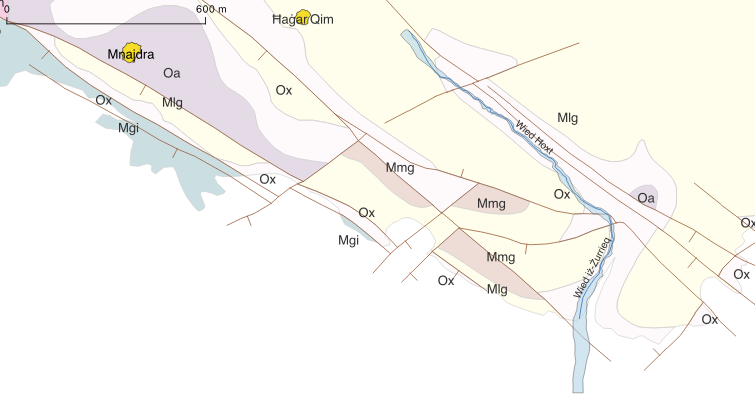

Water resources for the Neolithic Ħaġar Qim – Mnajdra cluster - Figure 38
https://doi.org/10.13140/RG.2.2.16407.28323
© Ronald Poell
Creative Commons Attribution 4.0 International License

Loading metadata…
Figure 38: Geological map of Wied Ħoxt and Wied Iż-Żurrieq.(057406)
← Gallery